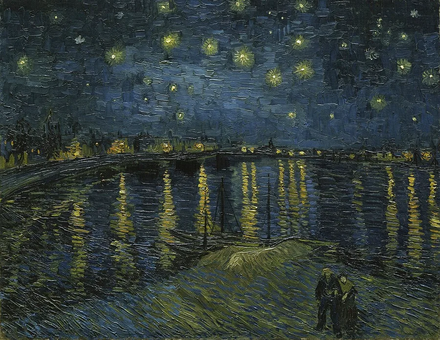
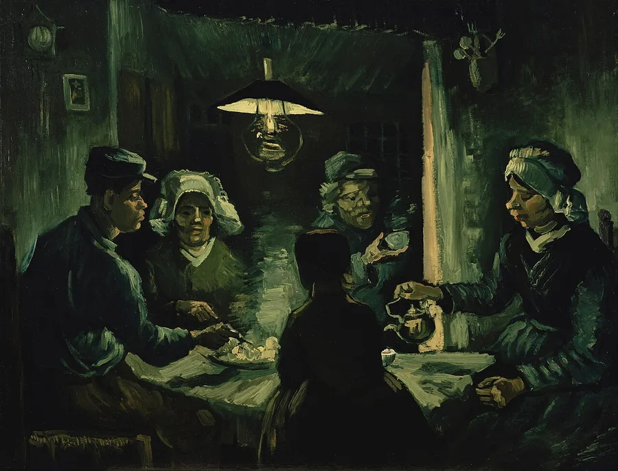
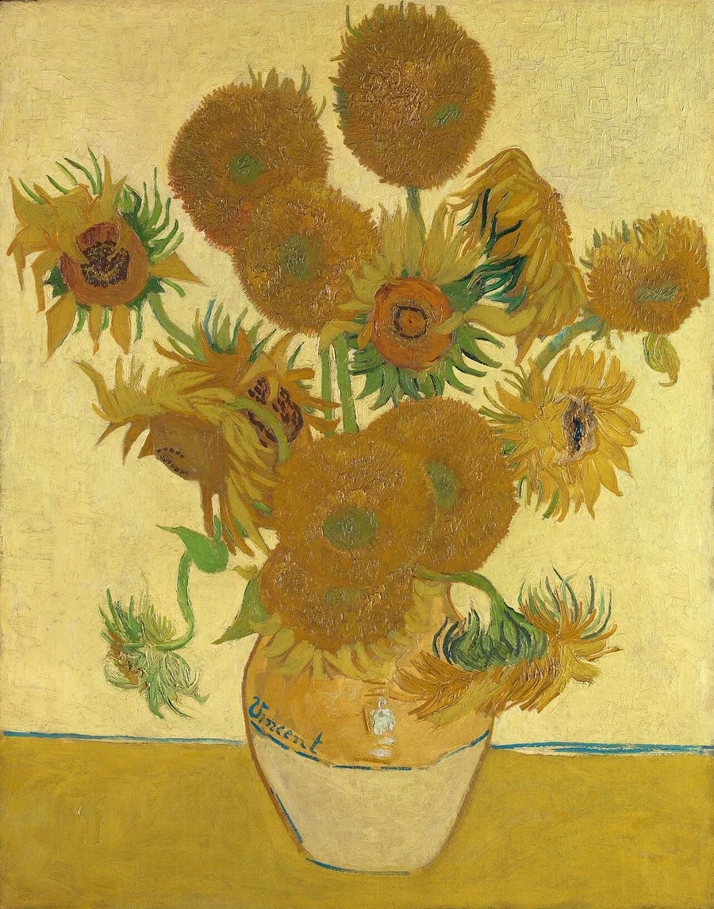
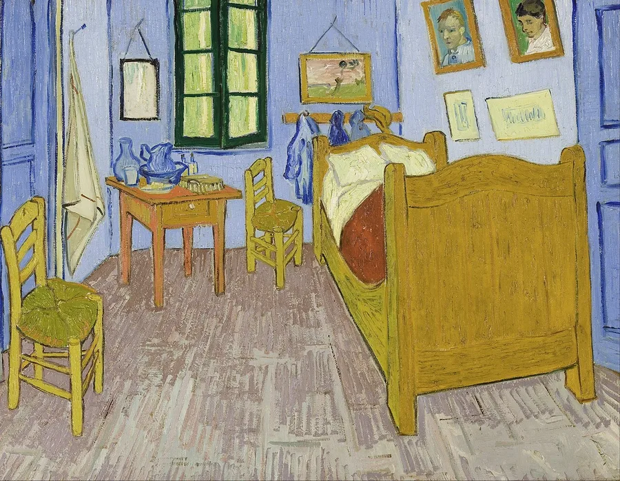
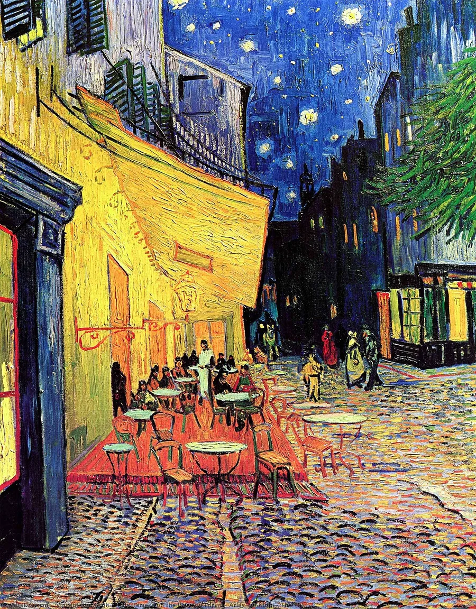
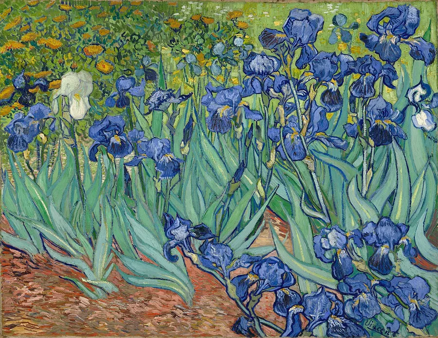
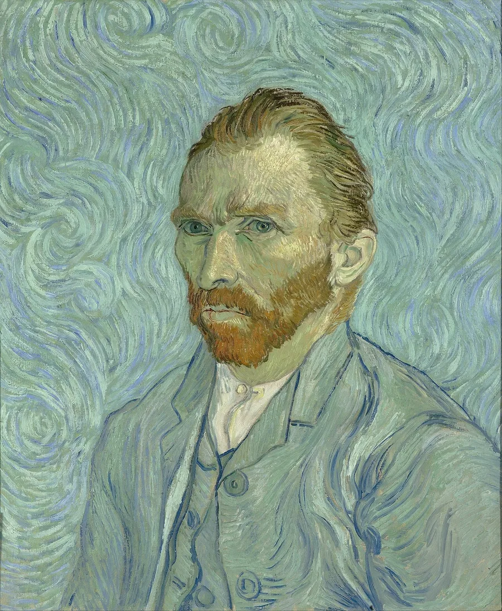
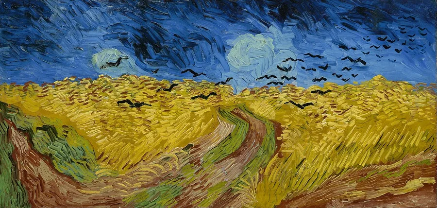

Visual Art · Color Theory · History of Art
Vincent van Gogh
Vincent van Gogh (1853–1890) was a Dutch Post-Impressionist painter who, in barely a decade of self-taught work, produced over 2,100 artworks — including some of the most recognized paintings in history. His swirling brushwork wasn't just an artistic style; it was built on a deliberate, almost scientific use of complementary color theory and the physical texture of paint itself.

Who Was Vincent van Gogh?
Born March 30, 1853 in Groot-Zundert, Netherlands, Vincent van Gogh tried several careers before finding painting. He worked as an art dealer and later trained as a preacher, hoping to minister to poor coal-mining communities in Belgium — both attempts ended in failure. He didn't commit to becoming a full-time painter until around 1880, at age 27, and he was almost entirely self-taught, learning through relentless practice, copying other artists' work, and studying art theory on his own.
Vincent's younger brother Theo, an art dealer in Paris, supported him financially and emotionally for his entire career, sending him money for paint, canvas, and rent. The two brothers exchanged hundreds of letters, many illustrated with sketches, which today form one of the richest surviving records of any artist's thinking. In 1888, chasing brighter light and more intense color, Vincent moved to Arles in the south of France, where he produced some of his most famous work.
Life in Arles was marked by crisis as well as creativity. Following a tense collaboration and conflict with fellow painter Paul Gauguin, Vincent suffered a severe mental health episode in December 1888 during which he cut off part of his own ear. In 1889 he voluntarily admitted himself to the Saint-Paul-de-Mausole asylum in Saint-Rémy-de-Provence, where, between episodes of illness, he painted The Starry Night and dozens of other major works.
Vincent died on July 29, 1890, near Auvers-sur-Oise from a gunshot wound generally understood to be self-inflicted, at age 37. He sold only one painting during his lifetime. It was only after his death — largely through the efforts of Theo's widow, Jo van Gogh-Bonger — that his work and his letters reached the wide audience that made him one of the most celebrated artists in history.
A Short, Prolific Life
- 1853 Born March 30 in Groot-Zundert, Netherlands.
- 1869–1876 Works as an art dealer; the job ends in failure and disillusionment.
- 1878–1879 Trains and works as a lay preacher among poor miners in Belgium; dismissed from the role.
- 1880 Commits to becoming a full-time, largely self-taught painter at age 27.
- 1886 Moves to Paris to live with Theo; discovers Impressionism and brightens his palette.
- 1888 Relocates to Arles in southern France, drawn by its intense sunlight and color.
- Dec 1888 Cuts off part of his own ear during a mental health crisis after a conflict with Paul Gauguin.
- 1889 Voluntarily enters the Saint-Paul-de-Mausole asylum in Saint-Rémy; paints The Starry Night.
- 1890 Moves to Auvers-sur-Oise; dies July 29 from a gunshot wound at age 37.
- 1890s–1914 Jo van Gogh-Bonger publishes his letters and promotes his paintings, building his posthumous fame.
The Science of Color and Texture
Van Gogh's paintings look vivid partly because of deliberate physics and perception, not just bold brushwork. He studied the color theory of French chemist Michel-Eugène Chevreul, who discovered the principle of simultaneous contrast: colors positioned directly opposite each other on the color wheel — complementary colors — make each other appear more intense when placed side by side. Van Gogh used this constantly. The Starry Night and his Café Terrace at Night pair glowing yellow against deep violet-blue skies; his Arles bedroom paintings and Sunflowers series pair warm orange against cool blue for the same vibrating effect.
Placing a color next to its complement makes both look more saturated to the eye — the basis of Chevreul's law of simultaneous contrast, which Van Gogh studied and applied deliberately.
Impasto: Paint as Physical Material
Van Gogh also treated paint as a physical, textured material rather than a flat layer of pigment. His technique of impasto — applying paint thickly with a loaded brush or palette knife, sometimes straight from the tube — left ridges and peaks that catch real light and cast tiny shadows across the canvas surface. This is a material and physical effect, not just a visual style: the texture itself changes how light reflects off the painting depending on the viewing angle, adding a third dimension to a two-dimensional surface.
Why do complementary colors look brighter together?
Was Van Gogh formally trained as a painter?
Van Gogh's Key Contributions
Applied Chevreul's simultaneous-contrast theory to make colors like yellow/violet and orange/blue vibrate against each other on canvas.
Applied paint thickly with a brush or palette knife, turning canvases into physically textured surfaces that catch real light.
Used color to convey emotion and mood rather than to copy what the eye literally saw — a major break from realism.
Produced roughly 2,100 artworks, including about 860 oil paintings, in about a decade of active work with almost no formal training.
His bold, emotional color choices directly shaped early 20th-century movements like Fauvism and German Expressionism.
Over 650 surviving letters to Theo, now held by the Van Gogh Museum, form an unusually detailed record of an artist's thinking.
Gallery: Eight Works That Trace His Style
Arranged roughly in the order he painted them, these eight works trace Van Gogh's palette from the dark, earthy tones of his early years to the vivid complementary contrasts and thick impasto of his final seasons in Arles, Saint-Rémy, and Auvers-sur-Oise. Click any painting to enlarge it.

Painted before he moved to Paris and encountered Impressionism — dark, muddy tones with none of the complementary color contrast he'd adopt just three years later.
Vincent van Gogh · Public domain · Wikimedia Commons
Nearly monochromatic — Van Gogh pushed dozens of shades out of a single color family, chrome yellow, to decorate the room he hoped Gauguin would share.
Vincent van Gogh · Public domain · Wikimedia Commons
Violet walls against a yellow bed frame — Van Gogh wrote to Theo that the flat complementary colors were meant to suggest rest, "where the imagination is set free."
Vincent van Gogh · Public domain · Wikimedia Commons
The gas-lit yellow awning glows against a deep violet-blue sky — the same complementary pairing he'd take even further in The Starry Night a year later.
Vincent van Gogh · Public domain · Wikimedia CommonsYellow gaslight reflections cross the blue river in broken strokes. Compare the horizontal marks on the water with the small radiating strokes around the stars.
Vincent van Gogh · Public domain · Wikimedia Commons
Painted in his first week at the asylum, working from the garden — violet petals set against complementary yellow-green leaves.
Vincent van Gogh · Public domain · Wikimedia Commons
One of over 35 self-portraits — the swirling blue background uses the same rhythmic brushwork he'd apply to the sky in The Starry Night.
Vincent van Gogh · Public domain · Wikimedia Commons
Painted weeks before his death — one of his final works, with paint applied so thickly it stands off the canvas in ridges.
Vincent van Gogh · Public domain · Wikimedia CommonsVan Gogh's Legacy Today
Van Gogh's bold, non-literal use of color became a direct influence on the Fauvist painters and German Expressionists of the early 20th century, who pushed color even further away from realistic representation to express raw emotion. His impasto technique and confident brushwork are still studied by painters today as an example of how physical paint application can carry as much meaning as color choice.
His more than 650 surviving letters to Theo — many illustrated with small sketches of works in progress — are one of the most detailed documented records of any artist's thought process in history, published and promoted after his death by Theo's widow, Jo van Gogh-Bonger. The gap between his life and his legacy is striking: he sold only one painting while alive and died in relative poverty, yet today his paintings are among the most valuable and recognized artworks in the world.
Practice Problems
Think about color theory, technique, and Van Gogh's life.
Easy1. In what year was Vincent van Gogh born?
Easy2. Who supported Vincent financially and emotionally throughout his career?
Medium3. On the color wheel, which color is the complementary opposite of blue?
Medium4. Van Gogh produced roughly 2,100 artworks in about 10 years of active painting. Approximately how many artworks per year is that, rounded to the nearest ten?
Challenge5. If a painting uses orange as its dominant color, which color would create the strongest contrast next to it, according to complementary color theory?
Medium6. What technique did Van Gogh use to apply paint thickly with a brush or palette knife, creating a textured, physical surface?
Easy7. How many of Van Gogh's paintings are generally believed to have sold during his lifetime?
Challenge8. Whose color theory work on simultaneous contrast did Van Gogh study and apply to his paintings?